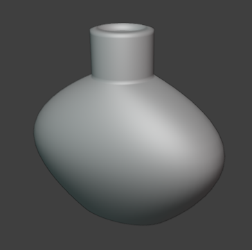
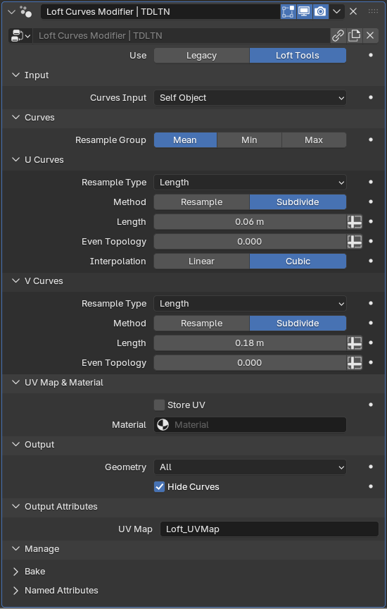
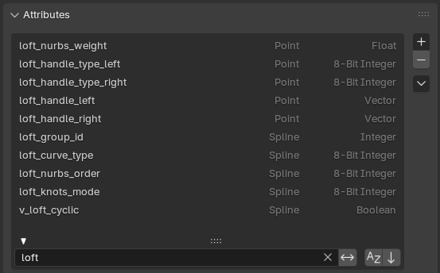
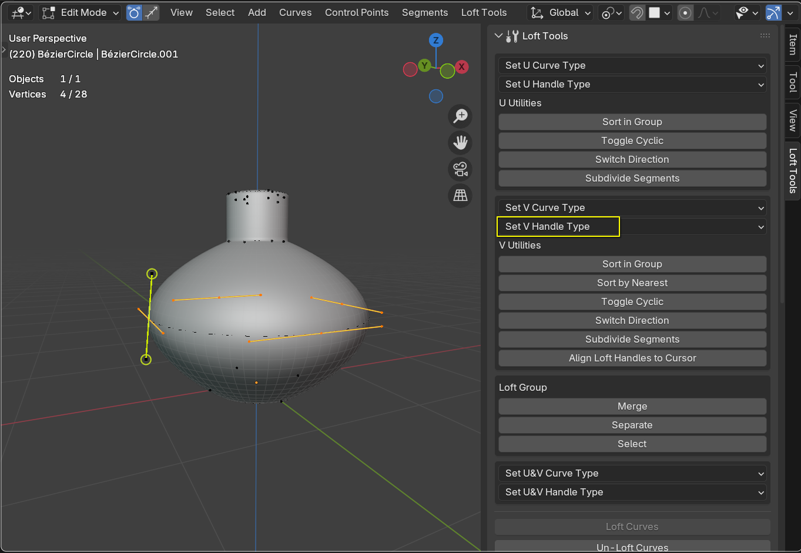
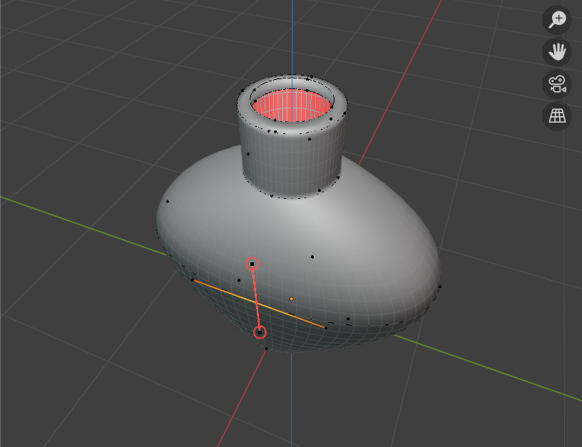
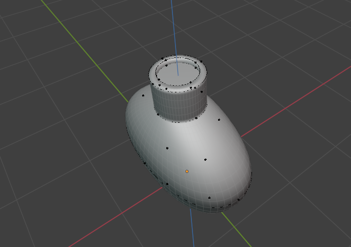
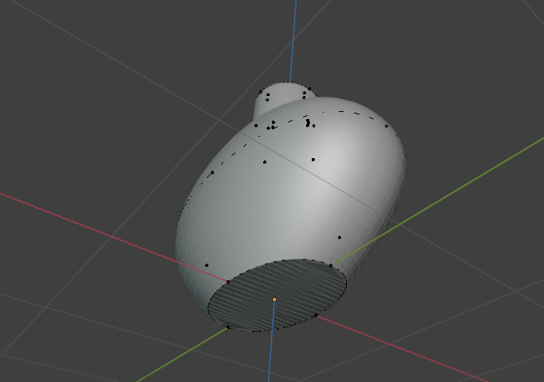

1. Potion Bottle
Make your first steps with the Loft Tools add-on.
1. Create Base Curve
Add a Bezier circle
Convert it to Curves using the Convert To operator (
object.convert)
2. Create Loft Surface
Execute the Loft Curves operator. This will add loft geometry modifier and required attributes.
 3. Shape the Bottle
Duplicate curves using
curves.duplicateto form the bottle’s base shapeThe lofted surface will have the default detalization. Adjust resampling Length.
The base curves that control cross-sections of the shape are U Curves.
The curves that connect the cross-sections and form the final mesh are V Curves.
4. Adjust Handles
Select the middle curve and set V Handle Type to Auto.
In Point Selection Mode:
Edit U Curves using Blender’s built-in handles as usual
Shape V Curves using the add-on’s handle gizmos - the handles appear for the first selected point on V Curves
The gizmo handles mimic the behaviour of the built-in handles, so by dragging an Auto handle, it will automatically change its type to Align.
5. Cap the Bottle
Add the Fill Loft Caps modifier after the main Loft modifier
2. Check Flip First or Flip Last to have the correct orientation of the normals in the resulting mesh.
 